승강기기사 (2012-09-15 기출문제)
1과목: 승강기 개론
1. 균형(보상)로프와 주로프와의 단위중량 관계로 옳은 것은?
- 주로프 보다 굵은 것이 가장 이상적이다.
- 주로프와 같은 것이 가장 이상적이다.
- 주로프 보다 가는 것이 가장 이상적이다.
- 주로프의 굵기와는 관계가 없다.
(정답률: 89%)

2. 도어머신에 대한 설명으로 옳은 것은?
- 동작회수가 엘리베이터 기동회수와 같으므로 보수가 용이하여야 한다.
- 도어문의 개폐장치는 위엄 감속기에서 벨트 또는 체인에 의한 감속장치로 늘어나는 추세이다.
- 작동이 원활하고 정숙하게 하기 위하여 AC모터와 감속 기구를 사용한다.
- 벨트나 체인 감속방법은 근래에는 거의 사용되지 않는 도어문 개폐장치이다.
(정답률: 65%)
3. 정격속도 90m/min의 엘리베이터에서 조속기(Governor)의 1차, 2차 동작속도[m/min]는 각각 얼마인가?(오류 신고가 접수된 문제입니다. 반드시 정답과 해설을 확인하시기 바랍니다.)
- 99미만, 108미만
- 108미만, 117미만
- 117미만, 126미만
- 126미만, 135미만
(정답률: 65%)
4. 다음 중 기계적 안전장치는?
- 구출운전장치
- 전자브레이크
- 도어스위치
- 정전시 자동착상장치
(정답률: 75%)
5. 군관리 방식에서 일정기간 승장의 호출버튼에 대한 요구수를 통계로 작성하여 시간대별로 서비스 방법을 달리하여 운전하는 방식으로 출퇴근시간 등 교통량이 많은 시간을 대비하여 원활한 서비스의 수행이 가능한 기능은?
- 사용자선택기능
- 즉시예보기능
- 학습기능
- 연산기능
(정답률: 77%)
6. 2대 이상의 엘리베이터가 동일 승강로에 설치될 때 2대의 카의 측부에 비상구출구를 설치할 수 있다. 이와 같은 경우의 구조와 관계가 없는 것은?
- 이 문은 벽의 일부가 외부방향으로 열린다.
- 문이 열려 있는 동안은 운전이 불가능하다.
- 외부에서는 열쇠없이도 구출구를 열 수 있다.
- 내부에서는 열쇠를 사용해야만 열 수 있다.
(정답률: 65%)
7. 플런저 여유 스트로크에 의한 카의 이동거리가 30㎝인 직접식 유압 엘리베이터의 꼭대기 부분틈새는 몇 ㎝ 이상인가?
- 50
- 60
- 90
- 100
(정답률: 55%)
8. 스텝체인의 보정 파단력을 구할 때 고려하지 않아도 되는 것은?
- 스텝의 무게
- 체인의 자중
- 체인의 인장장치의 인장스프링의 장력
- 체인의 인장장치의 자중
(정답률: 58%)
9. 기계식 주차장치에 설치하는 장치들이다. 맞지 않는 것은?
- 비상운전장치
- 출입문 또는 작동 멈춤장치
- 운반기내 정위치 정차장치
- 수동정지장치
(정답률: 66%)
10. 전압과 주파수를 동시에 제어하는 속도 제어 방식은?
- 교류 1단 속도제어
- 교류 귀환 전압제어
- 정지 레오나드 제어
- VVVF 제어
(정답률: 79%)
11. 장애인용 엘리베이터의 구조에 대한 설명이다. 적합하지 않는 것은?(관련 규정 개정전 문제로 여기서는 기존 정답인 2번을 누르면 정답 처리됩니다. 자세한 내용은 해설을 참고하세요.)
- 출입문의 틈과 유효 폭은 0.8m 이상으로 하여야 한다.
- 승강장 출입구 바닥 앞부분과 카 바닥 앞부분과의 틈의 너비는 4㎝ 이하로 하여야 한다.
- 문닫힘 안전장치를 비접촉식으로 설치할 경우 바닥 위 0.3m에서 1.4m 사이의 물체를 감지할 수 있어야 한다.
- 엘리베이터 내부의 유호 바닥면적은 폭 1.1m 이상, 깊이 1.35m 이상으로 하여야 한다.
(정답률: 58%)
12. 승강기용 기어드 권상기의 구성품이 아닌 것은?
- 완충기
- 전동기
- 웜기어
- 브레이크
(정답률: 68%)
13. VVVF제어방식의 구성에 관한 설명 중 틀린 것은?
- 고속용 엘리베이터에서는 회생에너지를 별도의 저항으로 소모시킨다.
- 인버터는 DC전원을 AC전원으로 변환시킨다.
- 컨버터는 AC전원을 DC전원으로 변환시킨다.
- DC전원의 콘덴서는 극성이 있다.
(정답률: 69%)
14. 동일 승강로에 2대 이상의 엘리베이터를 설치한 경우에 속도가 다르거나 정지층이 달라서 피트바닥의 높이차가 0.6m 이상일 때에는 그 사이에 추락방지용 난간을 설치하여야 한다. 그 높이는 몇 [m] 이상이어야 하는가?
- 1
- 1.1
- 1.2
- 1.3
(정답률: 48%)
15. 기계실에 대한 설명으로 틀린 것은?
- 외부로부터 기기들이 충분히 보호되어야 한다.
- 실내 통풍이 잘되고, 실온은 40°C 이하이어야 한다.
- 출입문은 외부인의 무단출입을 방지하는 장치를 하도록 한다.
- 기계실은 1층에 설치하도록 한다.
(정답률: 84%)
16. 조속기의 기능에 대한 설명으로 옳은 것은?(오류 신고가 접수된 문제입니다. 반드시 정답과 해설을 확인하시기 바랍니다.)
- 카의 속도가 정격속도의 1.3배를 초과하지 않는 범위내에서 과속스위치가 동작하는 것은 하강 방향에만 유효한다.
- 카의 속도가 정격속도의 1.4배를 초과하지 않는 범위내에서 조속기 로프를 잡아 비상정지장치를 작동시키는 것은 하강 방향에만 유효하다.
- 카의 속도가 정격속도의 1.2배를 초과하지 않는 범위내에서 과속스위치가 동작하는 것은 상승, 하강 양방향에 유효하다.
- 카의 속도가 정격속도의 1.3배를 초과하지 않는 범위내에서 조속기 로프를 잡아 비상정지장치를 작동시키는 것은 상승, 하강 양방향에 유효하다.
(정답률: 45%)
17. 트랙션 권상기에서 트랙션 능력을 확보하는데 고려할 사항으로 가장 거리가 먼 것은?
- 카의 가속도 및 감속도
- 카측과 균형추측의 중량비
- 와이어로프와 도르래의 마찰계수
- 조속기 용량
(정답률: 73%)
18. 엘리베이터에서 하강정격속도란?
- 설계도면에 기재된 속도로서 적재하중의 100%하중을 싣고 하강할 때의 평균속도
- 설계도면에 기재된 속도로서 적재하중의 110%하중을 싣고 하강할 때의 평균속도
- 설계도면에 기재된 속도로서 적재하중의 100%하중을 싣고 하강할 때의 매분 최고속도
- 설계도면에 기재된 속도로서 적재하중의 110%하중을 싣고 하강할 때의 매분 최고속도
(정답률: 47%)
19. 승강로가 갖추어야 할 조건이 아닌 것은?
- 엘리베이터 관련 부품이 설치되는 곳이다.
- 외부와 차단되는 구조로 설치되어야 한다.
- 벽면은 불연재료로 마감 처리되어야 한다.
- 특수목적의 가스배관은 통과 할 수 있다.
(정답률: 79%)
20. 유압식 승강기에서 압력배관이 파손되었을 때, 자동적으로 닫혀서 카가 급격히 떨어지는 것을 방지하는 장치는?
- 안전밸브
- 저지밸브
- 럽쳐밸브
- 체크밸브
(정답률: 61%)
2과목: 승강기 설계
21. 승강기의 안전장치 중 파이널 리미트 스위치에 관한 설명으로 옳은 것은?
- 카 내부 승차인원이나 적재화물의 하중을 감지한다.
- 엘리베이터가 최상·최하층을 지나치지 않도록 한다.
- 각 층마다 정차하기 위한 스위치로 카에 설치한다.
- 각 층마다 정차하기 위한 스위치로 층마다 설치한다.
(정답률: 79%)
22. 초고층 빌딩의 서비스층 분할에 관한 설명 중 틀린 것은?
- 수송 능력은 감소하나 일주시간이 짧아진다.
- 급행구간이 있어 고속성능을 살릴 수 있다.
- 건물의 인구분포에 변동이 있을 경우 분할점을 변경 할 수 있다.
- 서비스층은 저층용, 중층용, 고층용으로 분할하는 경우가 많다.
(정답률: 69%)
23. 인버터 엘리베이터에서 발생한 고차 고조파가 전파되는 경로가 아닌 것은?
- 복사에 의한 경로
- 진동에 의한 경로
- 정전유도에 의한 경로
- 전로전파에 의한 경로
(정답률: 56%)
24. 유압식 엘리베이터의 승강로 꼭대기 틈새 및 안전거리를 확보하는 데에 대하여 다음 중 보수 점검자의 안전을 위하여 설명한 내용은?
- 유압식의 카가 최상층에 착상했을 경우 상부최대의 상부면과 승강로 천장까지의 수직거리가 1.2m 이상이어야 한다.
- 제어회로이상 등으로 카가 최상층을 지날 때 승강로 윗부분 리미트 스위치의 작동상태는 양호하여야 한다.
- 카가 어떤 원인 등으로 최상층을 지나 플런저가 이탈방지장치로 정지했을 때 카 상부 최대의 상부면과 승강로 천장까지의 수직거리가 그림참조 이어야 한다.
- 유압식 엘리베이터에서 플런저 주행방지장치의 설치 및 작동상태가 양호하여야 한다.
(정답률: 56%)
25. 8인승 정격속도 90m/min인 로프식 승강기의 피트는 최소 몇 [m] 인가?(오류 신고가 접수된 문제입니다. 반드시 정답과 해설을 확인하시기 바랍니다.)
- 1.2
- 1.5
- 1.8
- 2.1
(정답률: 48%)
26. 엘리베이터의 운전에 관한 설명으로 옳은 것은?
- 지진관제운전시 승객의 안전을 위해서 착상구간에서도 출입문이 개방되지 않도록 설계한다.
- 정전구출운전시 엘리베이터는 기준층으로 복귀되어 출입문이 개방되고 승객은 자동으로 구출될 수 있도록 설계되어야 한다.
- 관제운전의 우선순위는 지진관제운전, 정전구출운전, 비상운전, 화재관제운전 등의 순서이다.
- 비상운전시 엘리베이터는 과부하감지장치의 신호를 무시하고 운행할 수 있다.
(정답률: 65%)
27. 다음 중 스프링 완충기의 설계에 대한 사항으로 옳지 않은 것은?
- 카측 완충기의 적용중량은 카 자중과 정격하중을 합한 무게의 2배를 기준으로 한다.
- 균형추측 완충기의 적용중량은 균형추 자중의 2배를 기준으로 한다.
- 스프링간 접촉된 부분이 없이 충격하중 상태에서 적용중량의 2배를 기준으로 한다.
- 정격속도가 30m/min 인 엘리베이터인 경우 스프링 완충기의 최소행점은 38㎜로 설계한다.
(정답률: 42%)
28. 엘리베이터에 사용되는 동력의 전원설비에 포함되지 않는 것은?
- 변압기
- 과전류차단기
- 배전선
- 제어반
(정답률: 52%)
29. 엘리베이터용 전동기가 일반 범용전동기에 비해 갖추어야 할 조건이 아닌 것은?
- 기동토크가 클 것
- 기동전류가 적을 것
- 온도상승에 대해 열적으로 견딜 것
- 회전부분의 관성모멘트가 클 것
(정답률: 72%)
30. 5.77m, 경사각 30° , 스텝체인 스포로켓 반지름 460mm, 구동체인 스프로켓 반지름 540mm, 고동체인 보정판단력이 12500㎏인 1200형 에스컬레이터의 체인 안전율은?
- 10.87
- 12.38
- 17.87
- 18.38
(정답률: 27%)
31. 그림은 비상정지장치의 거리와 정지력 관계를 나타낸 것이다. 어떤 형식의 비상정치장치인가?
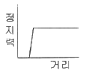
- 슬랙로프 세이프티
- 즉시 작동형 비상정지장치
- F.G.C형 비상정지장치
- F.W.C형 비상정지장치
(정답률: 66%)
32. 엘리베이터의 조속기에 대한 설명 중 옳지 않은 것은?
- 조속기는 카와 같은 속도로 움직인다.
- 제1의 동작은 정격속도의 1.3배 이내에서 작동하고 상승 및 하강방향에서 모두 작동한다.
- 제2의 동작은 정격속도의 1.4배 이내에서 작동하고 반드시 상숭 및 하강방향에서 모두 작동한다.
- 디스크조속기는 중·저속용에 사용되며, 플라이휠 조속기는 고속용에 주로 사용된다.
(정답률: 51%)
33. 수평보행기에 대한 일반적인 경우의 설계 사항으로 옳지 않은 것은?
- 파레트형의 경사도를 12도로 하였다.
- 이동 손잡이간의 거리는 2m 로 하였다.
- 경사도가 8도 이하인 것의 이동 손잡이의 정격속도를 분당 40m 로 하였다.
- 경사도가 8도 초과하는 것의 이동 손잡이의 정격속도는 분당 30m 로 하였다.
(정답률: 50%)
34. 이 스프링은 비틀림을 이용한 막대 모양의 스프링이다. 단위 체적중에 저축된 에너지가 크며, 차량의 현가장치 등에 이용된다. 이 스프링은 무슨 스프링인가?
- 볼류트 스프링
- 토션바
- 나선 스프링
- 겹판 스프링
(정답률: 70%)
35. 비상용 승강기를 설치할 경우의 의무사항은?
- 예비전원을 설치할 것
- 워드 레오나드방식으로 설치할 것
- 일반 승강기와 동일한 기종일 것
- 비상용콘센트를 설치할 것
(정답률: 69%)
36. 속도 45m/min 이고 플런저 여유 스트로크에 의한 카의 이동거리가 30㎝인 유압용 간접식 승강기의 꼭대기 틈새는 약 몇 [㎜] 인가?
- 629
- 700
- 800
- 929
(정답률: 41%)
37. 길이 2m인 연강봉에 인장하중이 작용하여 봉의 길이가 0.2㎜ 늘어났다면 인장변형률은 얼마인가?
- 0.01
- 0.001
- 0.0001
- 0.00001
(정답률: 56%)
38. 엘리베이터의 정격하중 1500㎏, 정격속도 180m/min, 엘리베이터의 종합효율 80%, 오버밸런스율이 50% 인 경우 전동기의 출력은 몇 [㎾] 인가?
- 25.16
- 27.57
- 32.72
- 36.25
(정답률: 64%)
39. 카 틀 및 카 바닥의 설계시 비상시 작용하는 하중으로 고려하지 않는 것은?
- 비상정지장치 작동시 하중
- 완충기 동작시 하중
- 지진 하중
- 적재중 하중
(정답률: 58%)
40. 유압식 엘리베이터의 전동기 출력이 30㎾, 1 행정당 전동기의 구동시간이 20초, 1시간당 왕복회수가 100회 일 때 유압기기의 발열량[kcal/h]은 얼마인가?
- 12333
- 13333
- 14333
- 15333
(정답률: 41%)
3과목: 일반기계공학
41. 체크밸브 또는 릴리프 밸브 등에서 압력이 상승하고 밸브가 열리기 시작하여 어느 일정안 흐름의 양이 인정되는 압력을 무엇이라고 하는가?
- 서지 압력
- 크래킹 압력
- 컷 아웃 압력
- 정격 압력
(정답률: 48%)
42. 나사의 종류 중 마찰계수가 극히 작아서 효율이 높으며, 백래시를 작게 할 수 있어서 NC 공작기계의 이송나사 등 정밀한 운동이 요구되는 곳에 주로 사용하는 나사는?
- 둥근 나사
- 볼 나사
- 삼각 나사
- 톱니 나사
(정답률: 60%)
43. 다음 키의 종류 중 일반적으로 가장 큰 토크를 전달할 수 있는 키는?
- 안장 키
- 납작 키
- 접선 키
- 원뿔 키
(정답률: 62%)
44. 고속 절삭가공에 대한 설명 중 틀린 것은?
- 공구재료의 발달로 고속가공 기술이 발전되었다.
- 절삭속도 상승 시 반드시 바이트의 수명이 단축되므로 이를 고려하여 가공계획을 세워야 한다.
- 고속 절삭 시 절삭능률 및 표면거칠기가 향상된다.
- 고속 절삭 과정에서 고온의 칩이 비산할 수 있으므로 이에 대한 대처가 필요하다.
(정답률: 56%)
45. 반동수차의 종류 중 하나로 물이 수차 내부의 회전차를 통과하는 사이에 압력과 속도 에너지가 감소하고 그 반동으로 회전차를 구동하는 수차는?
- 중력 수차
- 축류 수차
- 펠톤 수차
- 프란시스 수차
(정답률: 58%)
46. 용접부의 검사법 중 시험편 내에 있는 결함에서 반사되어 오는 반응을 시간적 연광성이 있는 오실로스코프에 받아 기록하는 방법은?
- 침투 탐상검사
- 자분 탐상검사
- 초음파 탐상검사
- 방사선 투과검사
(정답률: 65%)
47. 고강도 AI 합금의 명칭으로 알루미늄에 Cu, Mg, Mn 등의 원소를 첨가하여 기계적 성질을 개선한 알루미늄 합금은?
- 듀랄루민
- 실루민
- Lo-Ex
- 콘스탄탄
(정답률: 65%)
48. 원주형 소재와 공구를 회전시키거나 왕복운동을 시키면서 압인시켜 공구의 형상에 대응하는 요철형상을 만들어내는 것으로 나사가공에 주로 이용하는 가공은?
- 단조가공
- 인발가공
- 제관가공
- 전조가공
(정답률: 45%)
49. 길이 120㎝, 지름 5㎝의 황동봉에 5000N의 인장하중을 가했을 때 탄성변형이 이루어진다고 가정할 경우 변형률은 약 얼마인가? (단, 세로탄성계수는 6300×106 N/m2이다.)
- 1.45×10-5
- 8.47×10-5
- 2.36×10-4
- 4.04×10-4
(정답률: 34%)
50. 펌프의 공동현상(caviation)의 방지법으로 거리가 먼 것은?
- 펌프의 설치높이를 되도록 낮추어 흡입 양정을 짧게 한다.
- 압축펌프를 사용하고, 회전차를 수중에 완전히 잠기게 한다.
- 양흡입펌프를 사용한다.
- 펌프의 회전수를 높여서 흡입 비속도를 크게 한다.
(정답률: 61%)
51. 동일재료의 축 A, B의 길이는 동일하고 지름이 각각 d, 2d 일 경우 같은 각도만큼 비틀림 변형시키는데 필요한 비틀림 모멘트 비
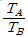
의 값은?- 1/2
- 1/4
- 1/8
- 1/16
(정답률: 57%)
52. 평벨트 풀리의 종류는 림의 폭 중앙이 볼록한 C형과 림의 폭 중앙이 편평한 F형이 있다. 여기서 C형 림의 폭 중앙을 볼록하게 제작한 가장 큰 이유는?
- 주조할 때 편리하도록 목형 물매를 두기 위하여
- 벨트를 걸기에 편리하도록 하기 위하여
- 벨트를 상하지 않게 하기 위하여
- 벨트가 벗겨지는 것을 방지하기 위하여
(정답률: 66%)
53. 코일스프링의 평균 지름을 D, 스프링 선재의 지름을 d 라 할 때
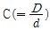
를 무엇이라 하는가?- 스프링 부하계수
- 스프링 상수
- 스프링 수정계수
- 스프링 지수
(정답률: 53%)
54. 인장강도가 36N/㎜2 인 연강환봉을 사용하여 180N의 인장하중을 받는 봉의 안전율을 4 로 설계할 경우 치소 지름은 약 몇 ㎜ 인가?
- 5.1
- 10.1
- 15.2
- 20.2
(정답률: 23%)
55. 게이지블록이나 마이크로미터 측정면의 평면도를 측정하는데 가장 적합한 측정기는?
- 정반
- 옵티컬 플랫
- 공구 현미경
- 사인바
(정답률: 68%)
56. 합성수지는 크게 열가소성 수지와 열결화성 수지로 구분하는데, 다음 중 열가소성 수지에 해당하는 것은?
- 아크릴 수지
- 페놀 수지
- 멜라민 수지
- 실리콘 수지
(정답률: 51%)
57. 회전축에 발생하는 전단응력이 50MPa 일 때 전달 동력은 약 몇 ㎾인가?(단, 회전축의 지름 20 mm, 회전속도 1000 rpm 이다.)
- 8.22
- 10.04
- 16.87
- 23.45
(정답률: 27%)
58. 목형의 제작 시 주형에서 목형을 쉽게 빼내기 위한 기울기를 주는 것을 무엇이라 하는가?
- 수축 여유
- 가공 여유
- 목형 구배
- 코어 프린트
(정답률: 59%)
59. 단면적이 일정하고 길이가 200㎜ 인 보의 중앙에 200N의 집중하중이 작용하거나, 합계가 200N인 균인 등분포 하중이 작용할 때 다음중 최대 처짐량이 가장 작은 것은?
- 양단회전 보에 균일 등분포 하중이 작용할 때
- 양단고정 보에 균일 등분포 하중이 작용할 때
- 양단회전 보 중앙에 집중하중이 작용할 때
- 양단고정 보 중앙에 집중하중이 작용할 때
(정답률: 54%)
60. 탄소강의 성질 중 아공석강(C＜0.77%) 영역에서는 탄소함유량이 증가할수록 인장강도와 연신율은 어떻게 변하는가?
- 인장강도와 연신율 모두 증가한다.
- 인장강도는 감소하고, 연신율은 증가한다.
- 인장강도는 증가하고, 연신율은 감소한다.
- 인장강도와 연신율 모두 감소한다.
(정답률: 54%)
4과목: 전기제어공학
61. 그림과 같은 회로는 어떤 회로를 조합한 것인가?
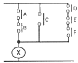
- OR 회로와 NOR 회로
- OR 회로와 NOT 회로
- AND 회로와 NOT 회로
- AND 회로와 OR 회로
(정답률: 54%)
62. 자동제어계의 출력신호를 무엇이라 하는가?
- 조작량
- 목표값
- 제어량
- 동작신호
(정답률: 42%)
63. 다음 중 정류기의 평활회로에 이용되는 것은?
- 고역필터
- 저역필터
- 대역통과필터
- 대역소거필터
(정답률: 49%)
64. 논리식
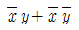
를 간단히 하면?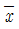
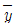
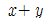
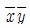
(정답률: 64%)
65. RLC 직렬회로에서 XL ＜ XC 일 때 전압과 전류의 위상관계를 가장 잘 설명한 것은?
- 유도성회로가 되어, 전류는 전압보다 θ만큼 뒤진다.
- 용량성회로가 되어, 전류는 전압보다 θ만큼 앞선다.
- 유도성회로가 되어, 전류는 전압보다 θ만큼 앞선다.
- 용량성회로가 되어, 전류는 전압보다 θ만큼 뒤진다.
(정답률: 47%)
66. 승강기나 에스컬레이터 등의 옥내 전선의 절연저항을 측정하는데 가장 적당한 측정기기로 알맞은 것은?
- 메거(megger)
- 켈빈 더블 브리지
- 휘이트스톤 브리지
- 코올라우시 브리지
(정답률: 65%)
67. 변압기의 부하손(동손)에 대한 특성 중 맞는 것은?
- 동손은 주파수에 의해 변화한다.
- 동손은 자속 밀도에 의해 변화한다.
- 동손은 부하 전류에 의해 변화한다.
- 동손은 온도 변화와 관계없다.
(정답률: 58%)
68. 자기증폭기의 특정이 아닌 것은?
- 회전부가 없다.
- 한 단당의 전력증폭도가 크다.
- 소전력에서 대전력까지 사용할 수 있다.
- 응답속도가 빠르다.
(정답률: 49%)
69. 15[kVA]의 단상변압기 3대를 △결선해서 급전하고 있을 때 한 대의 변압기가 소손되어 나머지 2대의 변압기로 32.48[kVA]의 부하에 사용했을 때 약 몇 [%]의 과부하가 걸리게 되는가?
- 15
- 20
- 25
- 30
(정답률: 33%)
70. A=6+j8, B=20∠60° 일 때 A+B를 직각좌표형식으로 표현하면?
- 26 + j25.32
- 16 + j25.32
- 18 + j25.32
- 28 + j25.32
(정답률: 51%)
71. 제어량에 따른 분류 중 프로세스 제어에 속하지 않는 것은?
- 압력
- 유량
- 온도
- 속도
(정답률: 49%)
72. 열차 등의 무인운전을 시행하기 위한 제어에 해당되는 것은?
- 정치제어
- 추종제어
- 비율제어
- 프로그램제어
(정답률: 56%)
73. 비행기 등과 같은 움직이는 목표값의 위치를 알아보기 위한 즉, 원뿔주사를 이용한 서보용 제어기는?
- 자동조타장치
- 추적레이더
- 공작기계의 제어
- 자동평형기록계
(정답률: 63%)
74. 그림과 같은 RLC 병렬공진회로에 관한 설명으로 옳지 않은 것은?
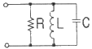
- R 이 작을수록 선택도 Q 가 높다.
- 공진시 공진전류는 최소가 된다.
- 공진조건은
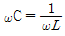
이다. - 공진시 입력 어드미턴스는 매우 작아진다.
(정답률: 39%)
75. 어떤 제어계의 임펄스 응답이 sinωt 일 때 계의 전달 함수는?
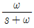
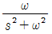
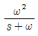
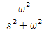
(정답률: 50%)
76. 어떤 코일에 단상 100V의 전압을 가하면 10A의 전류가 흐르고 750W의 전력을 소비한다고 할 때, 이 코일과 병렬로 전력용 콘덴서를 접속하였더니 회로의 합성역률이 1 이 되었다면 용량 리액턴스는 몇 [Ω] 인가?
- 7.62
- 13.25
- 15.15
- 16.23
(정답률: 25%)
77. 기준 입력과 검출부 출력을 합하여 제어계가 정해진 작용을 하는데 필요한 신호를 만들어 조작부에 보내는 부분을 무엇이라 하는가?
- 출력부
- 조절부
- 비교부
- 검출부
(정답률: 46%)
78. 직류 전동기의 출력이 20[㎾]인 전동기에서 회전수가 1200[rpm]일 때 토크는 약 몇 [㎏·m] 인가?
- 10
- 13
- 16
- 19
(정답률: 44%)
79. 피드백제어계에서 제어요소에 대한 설명으로 맞는 것은?
- 목표값에 비례하는 기준 입력신호를 발생하는 요소이다.
- 조작부와 조절부로 구성되고 동작신호를 조작량으로 변환하는 요소이다.
- 기준입력과 주궤환신호의 차로 제어동작을 일으키는 요소이다.
- 제어를 하기 위하여 제어대상에 부착시켜 놓는 장치이다.
(정답률: 50%)
80. 전기차철심을 규소 강판으로 성층하는 주된 이유는?
- 가공하기 쉽다.
- 가격이 싸다.
- 기계손을 적게 할 수 있다.
- 철손을 적게 할 수 있다.
(정답률: 56%)